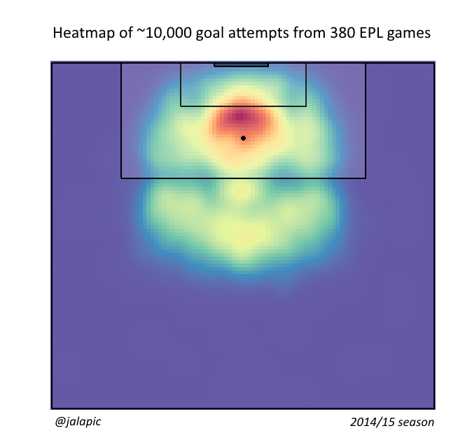
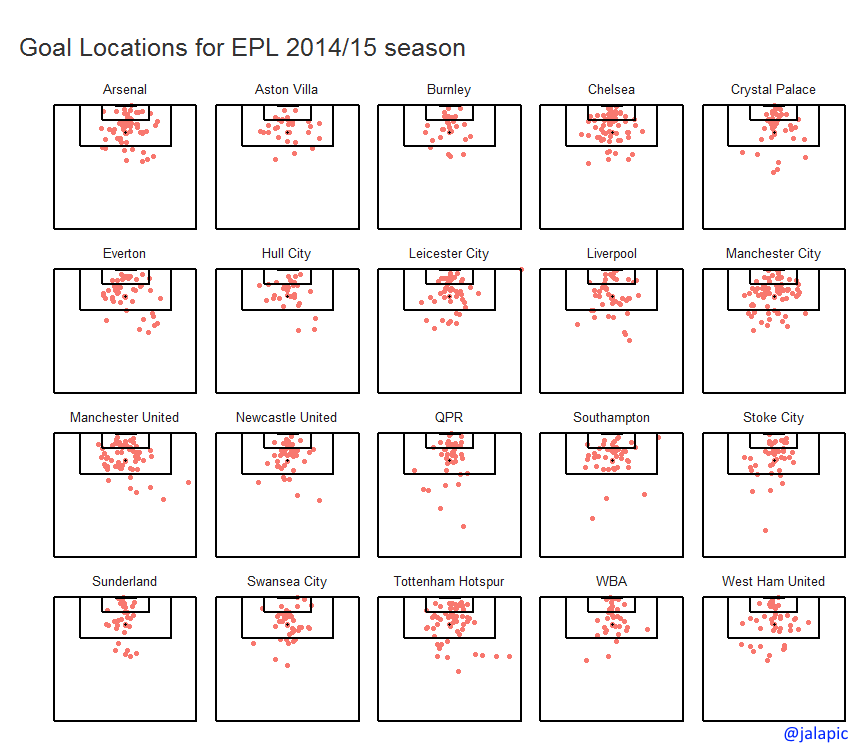

Here are the heatmaps for shots taken by all EPL teams throughout the 2014-15 season (over 9900 shot attempts). All shot types are included (headers, free-kicks, on-target, off-target). Different patterns emerge likely related to styles of play. Burnley and West Ham for instance appear to have a higher density of attempts from the direct center of goal. Manchester City have a very attractive symmetrical pattern with two hot areas just either side of the penalty spot. Everton mirror that pattern but less successfully. The composite of all teams can be seen below.Future visualizations will address different shot types

Finally, here are the goal locations for each team - this also enables us to see which teams are more direct or varied in their attack.
I just put this together very quickly. I would love to do a more in depth analysis and may do so if there is interest.
More visualizations are available on my GitHub page. For more information please contact me via twitter.